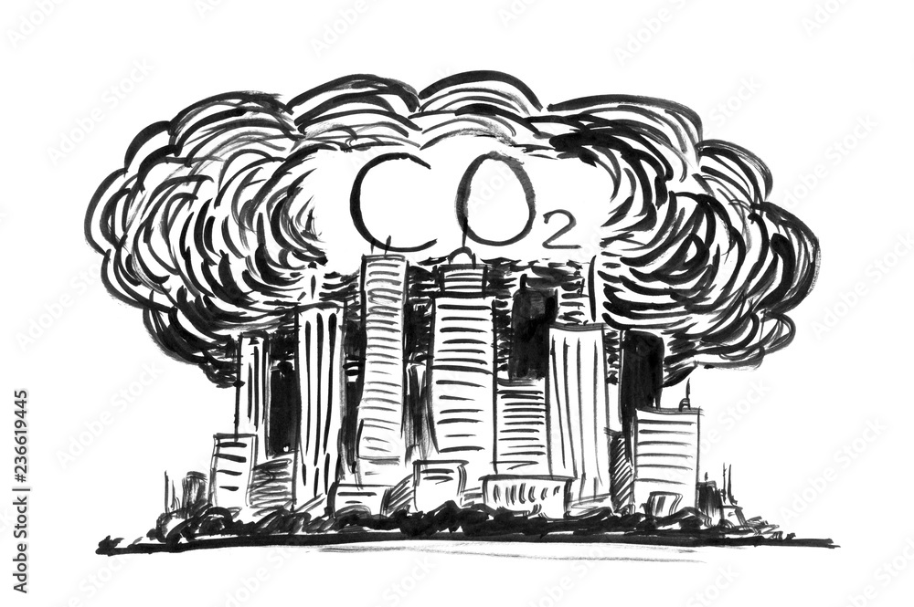

Air pollution is one of the most important environmental threats to urban populations and
while all
people are exposed, pollutant emissions, levels of exposure, and population vulnerability
vary
across neighborhoods. Exposures to common air pollutants have been linked to respiratory and
cardiovascular diseases, cancers, and premature deaths. Getting a deeper look into pollution
levels/ factors in California specifically could give an insight as to what people are being
exposed to.

Ground level AQI in Bay Area
This Chart shows the analysis of ozone level variations across different geographical zones in the Bay Area in 2023.
AQI during September Wildfires
The chart visualizes daily Air Quality Index (AQI) values for PM 2.5 in the Bay Area,
focusing on four major cities: San Francisco, San Jose, Oakland, and Fremont. It provides insights
into ground-level ozone levels over the orange skies week in September 2023.
Bay Area air quality has often taken a turn for the worse as the calendar flips from summer to fall,
with spikes in particulate-matter pollution correlating closely with major wildfires.
Over the past 10 years, Bay Area air quality has shown a trend of increasingly common spikes in pollution later in the summer,
which come with increased health risks.
Fine particulate matter (PM2.5) pollution is shown in the line chart above.
Air quality in bay area is most majorly affected by transportation emissions.
The map shows the distribution of AQI values in different counties of California.
highlights Los Angeles as the county with the worst air quality.
This is also an effect of rising temperatures in California.
El Dorado and Lakes were two counties with the best AQI levels in 2023.